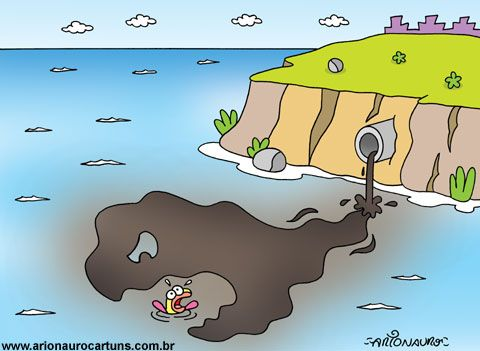

Além dos plásticos, a poluição química representa um grande risco. Produtos químicos agrícolas, como pesticidas e fertilizantes, chegam aos oceanos através da drenagem das terras agrícolas e dos rios, causando a eutrofização das águas. Esse processo resulta em zonas mortas, áreas com níveis de oxigênio tão baixos que a vida marinha não consegue sobreviver. Substâncias tóxicas liberadas por indústrias, incluindo metais pesados e poluentes orgânicos persistentes, acumulam-se nos tecidos dos organismos marinhos, contaminando a cadeia alimentar e afetando a saúde humana.
